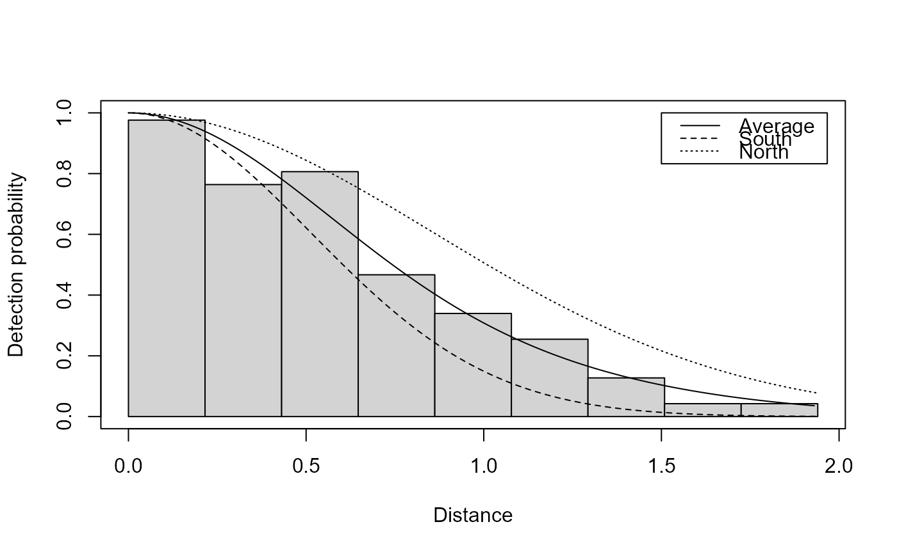
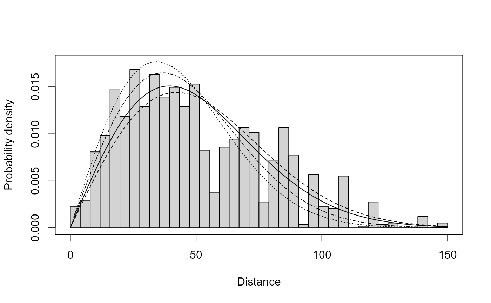

Add a line or lines to a plot of the detection function which correspond to a a given covariate combination. These can be particularly useful when there is a small number of factor levels or if quantiles of a continuous covariate are specified.
Arguments
- ddf
a fitted detection function object.
- data
a
data.framewith the covariate combination you want to plot.- ...
extra arguments to give to
lines(e.g.,lty,lwd,col).- ndist
number of distances at which to evaluate the detection function.
should the line be drawn on the probability density scale; ignored for line transects
- breaks
required to ensure that PDF lines are the right size, should match what is supplied to original
plotcommand. Defaults to "Sturges" breaks, as inhist. Only used ifpdf=TRUE
Details
All covariates must be specified in data. Plots can become quite busy
when this approach is used. It may be useful to fix some covariates at their
median level and plot set values of a covariate of interest. For example
setting weather (e.g., Beaufort) to its median and plotting levels of
observer, then creating a second plot for a fixed observer with levels of
weather.
Arguments to lines are supplied in ... and aesthetics like
line type (lty), line width (lwd) and colour (col) are
recycled. By default lty is used to distinguish between the lines. It
may be useful to add a legend to the plot (lines are plotted
in the order of data).
Note
This function is located in the mrds package but the
documentation is provided here for easy access.
Examples
# example using a model for the minke data
data(minke)
# fit a model
result <- ds(minke, formula=~Region.Label)
#> Model contains covariate term(s): no adjustment terms will be included.
#> Fitting half-normal key function
#> AIC= 57.005
# make a base plot, showpoints=FALSE makes the plot less busy
plot(result, showpoints=FALSE)
# add lines for sex one at a time
add_df_covar_line(result, data.frame(Region.Label="South"), lty=2)
add_df_covar_line(result, data.frame(Region.Label="North"), lty=3)
# add a legend
legend(1.5, 1, c("Average", "South", "North"), lty=1:3)

# point transect example
data(amakihi)
result <- ds(amakihi, truncation=150, transect="point", formula=~OBs)
#> Model contains covariate term(s): no adjustment terms will be included.
#> Fitting half-normal key function
#> AIC= 13870.198
plot(result, showpoints=FALSE, pdf=TRUE)
add_df_covar_line(result,
data.frame(OBs=na.omit(unique(amakihi$OBs))), pdf=TRUE)
